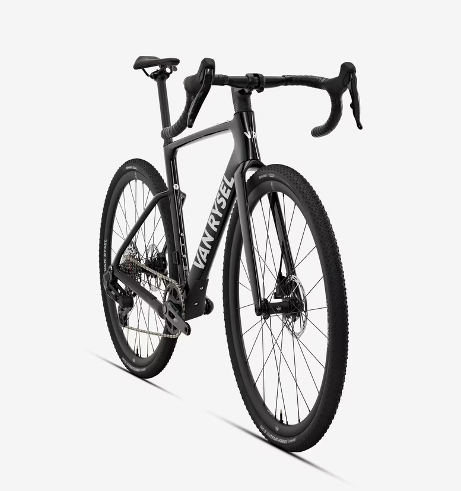
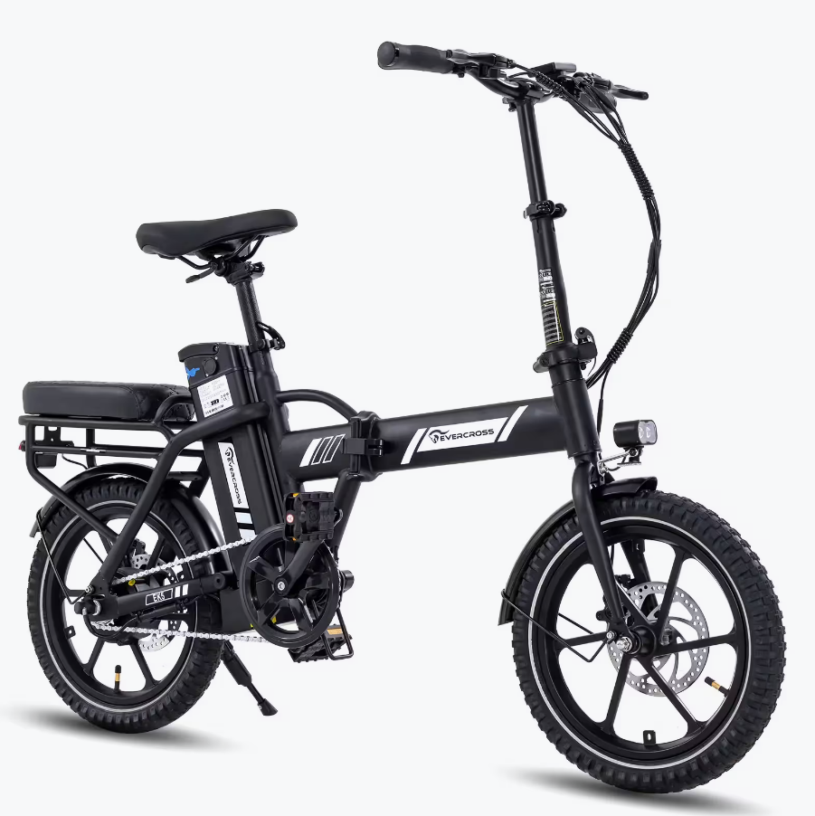
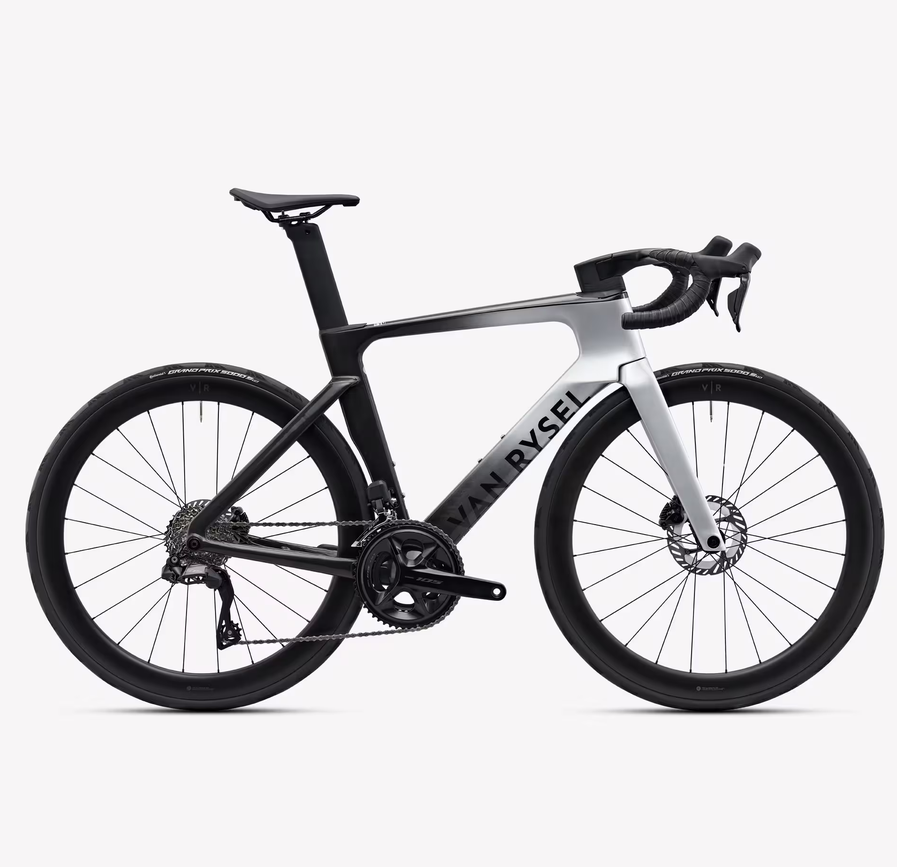
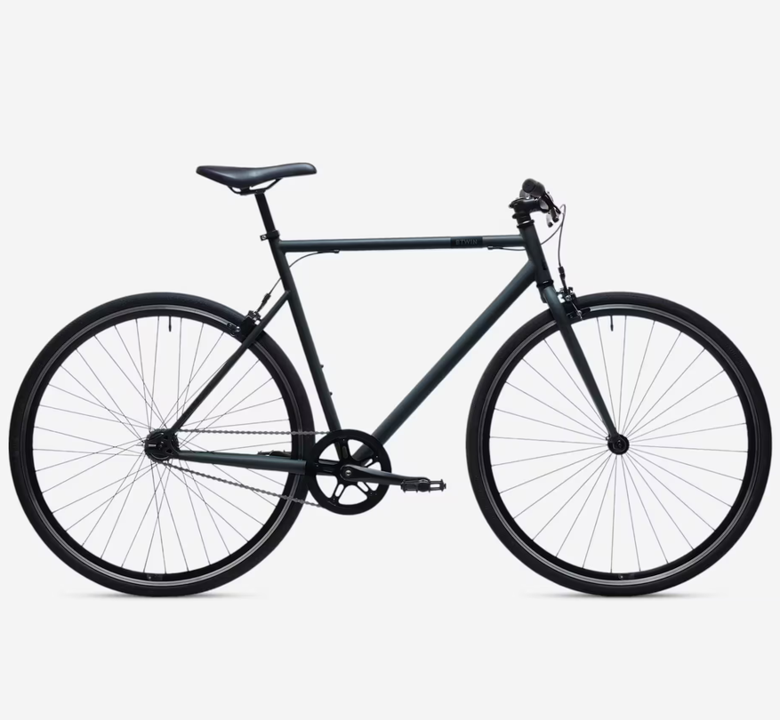
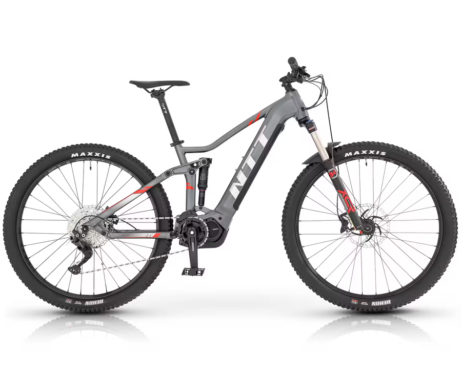
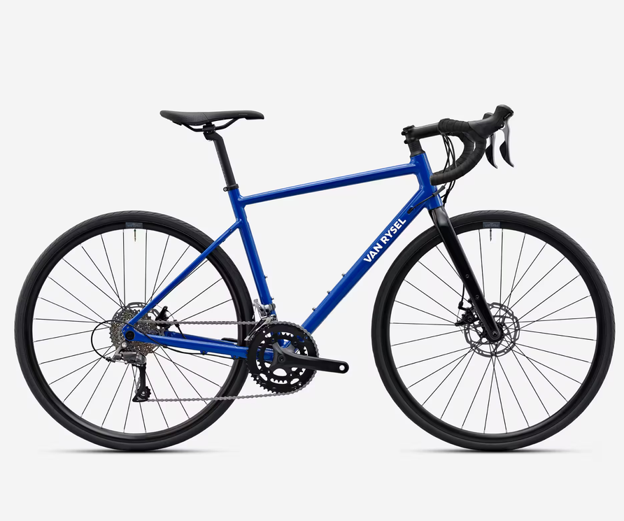

| Bicicleta Gravel RCR-G Negro SRAM Rival AXS E1 XPLR |
|---|
|
 El cuadro aerodinámico de carbono y el paso de neumáticos de 50 mm te permiten enfrentarte a los recorridos más exigentes con absoluta agilidad. |
| EVERCROSS Bicicleta Eléctrica Plegable 250W EVERCROSS EK5 |
|
 Bicicleta eléctrica EVERCROSS EK5 con neumáticos de 16", motor de 250W, batería extraíble de 36V, pantalla LCD y frenos de disco. Comodidad, seguridad y estilo para tus trayectos diarios. |
| VAN RYSEL Bicicleta Carretera Rcr-F Pro Shimano 105 Di2 3 |
|
 Creada en túnel de viento en colaboración con Swiss Side y probada por ciclistas profesionales de Decathlon CMA CGM, la bici de carretera RCR-F está destinada a ciclistas dispuestos a rendir. |
| ELOPS Bicicleta Fixie Elops 500 |
|
 ¿Nuestro objetivo? Hacer accesible por fin una buena bicicleta urbana, ágil, rápida y compatible con un uso fixie (buje flip flop) |
| Bicicleta eléctrica mtb doble suspensión 29" Shimano E7000 NTT SPACE |
|
 Bicicleta eléctrica de doble suspensión con ruedas de 29 pulgadas para disfrutar de tus rutas gracias a la ayuda de su motor central. Batería 504 Wh motor central de 250 w. |
| VAN RYSEL Bicicleta Carretera Shimano Claris 2x8v EDR AF |
|
 Disfruta de la fiabilidad de la transmisión Shimano Claris 2x8 velocidades, de los frenos de disco mecánicos y de los neumáticos de 32 mm de ancho, ¡para descubrir los placeres del ciclismo en carretera! |